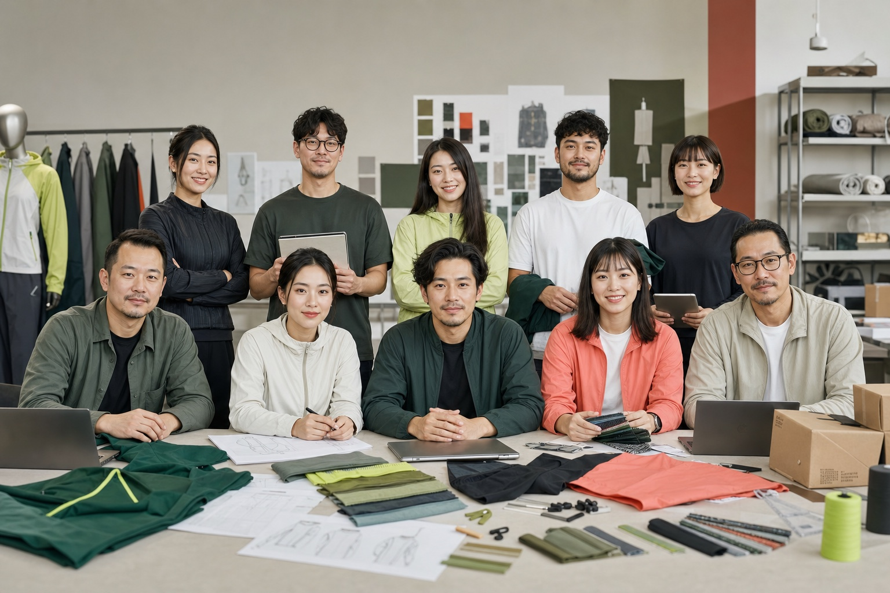

Legal entity and team
Add registered company details, named roles, dated team photographs, and a contact who can confirm responsibility. The role map below describes responsibilities, not named employees.

Buyer due diligence
Use this page to review the development, sampling, quality, packing, and documentation checkpoints that should be verified for a custom sportswear project.
Disclosure: the current page images are illustrative planning visuals, not documentary photographs of a named factory.
Public evidence status
This register prevents planning visuals or generic statements from being mistaken for documentary proof. Each item can be upgraded only with current, attributable records.
Add registered company details, named roles, dated team photographs, and a contact who can confirm responsibility. The role map below describes responsibilities, not named employees.
Current visuals explain workflows. Replace or supplement them with dated, owned factory, sample-room, sewing, printing, QC, and packing media.
Publish the holder, issuer, number, scope, product or material coverage, issue date, expiry, and redaction reason where applicable.
Publish only customer-approved brand names, products, quantities, markets, timelines, challenges, outcomes, quotes, and images.
Illustrative project-support role map
These role labels explain how work can be divided across a project. They are not named employee profiles, a verified ten-person staff roster, or a guarantee that every responsibility is assigned to a separate person. Confirm the responsible contact and availability for each live project.

No names, biographies, employment claims, or customer relationships are attached to the people shown. Replace this illustration only with dated, owned team photography and confirmed role information.
Evidence status: illustrative. This image does not prove staff size, identity, employment, location, capacity, or availability.Buyer type, market, quantity, timing, contact route, and open questions.
Product references, style scope, OEM or ODM route, and development priorities.
Measurements, BOM, construction notes, revisions, and controlled files.
Pattern version, grade assumptions, fit comments, and approval status.
Material references, composition, weight, handfeel, color targets, and availability checks.
Sample IDs, build notes, revisions, comments, and approval gates.
Logo files, placements, decoration method, strike-off, and durability-review needs.
Material readiness, production references, change control, and timing checkpoints.
Inspection points, evidence requests, corrective action, and unresolved risks.
Labels, SKU and carton reconciliation, shipment handoff, and retained reorder references.
Illustrative production workflow
The image and checkpoints below explain a possible workflow. They do not document a named GloryStarWear facility, prove that any process occurred, or establish current equipment, capacity, staffing, ownership, or availability.

Direct answer
Buyers can verify product development process, sample workflow, fabric and trim confirmation, logo methods, inspection checkpoints, packing requirements, communication process, and project documentation before bulk production.
OEM production can follow buyer tech packs. ODM development can start from references, target fabric, fit direction, color story, packaging, and launch plan. Review the supplier's OEM and ODM sportswear manufacturing capabilities against the route required for each style.
Sample comments, fabric handfeel, measurements, logo execution, labels, and packaging references are aligned before bulk approval.
Fabric, color, stitching, measurements, decoration, label content, carton marks, and final packing are checked against approved requirements.
Buyer-facing documents can include quote sheet, sample comments, size chart, artwork files, packing rules, inspection notes, and shipment details.
Evidence checklist
The visuals below explain workflow categories only. Verify real, current photos, documents, video, and buyer-approved project records before relying on supplier claims.


Trust links
Use these pages to review certificates, media, case examples, quality control, and the quote information needed for accurate supplier evaluation.
Review what certificate, audit, fabric, and material documents buyers should request before sampling.
View certificates pageReview clearly labeled hypothetical briefs for private label yoga wear, gym wear, teamwear, and packaging programs; they are not completed customer cases.
View planning examplesPrepare questions about sample-room, production, QC, packing, and shipment evidence; confirm current media and call availability separately.
Request and verify factory mediaCompare legal and payment identity, operating scope, product fit, sample control, materials, quality evidence, certificate scope, packing, and risk gates.
Open due diligence checklistRecord each claim, requested file, holder, scope, validity, verification method, disclosure level, owner, and review date.
Download evidence CSVPrepare product references, logo files, quantities, size range, fabric target, packaging, and delivery information.
Open quote checklist